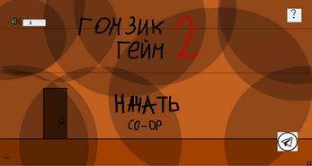
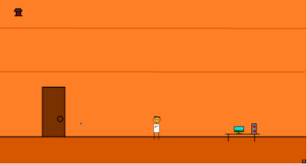
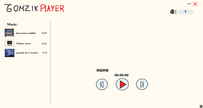
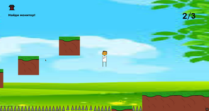
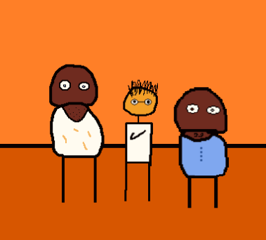
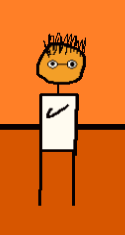
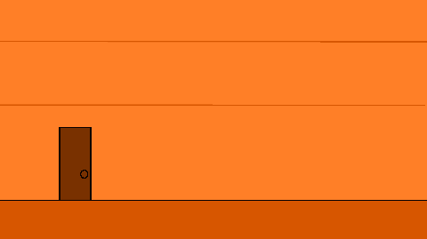
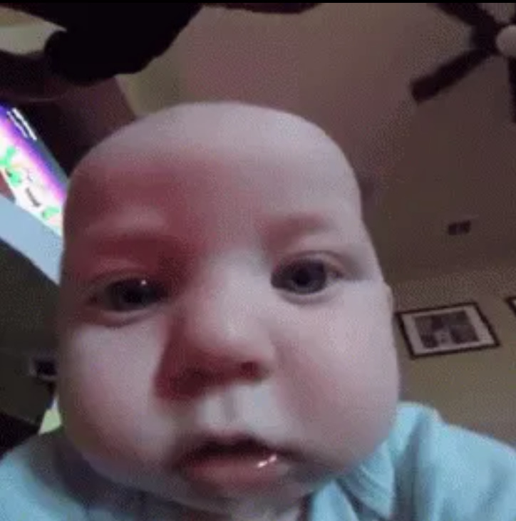
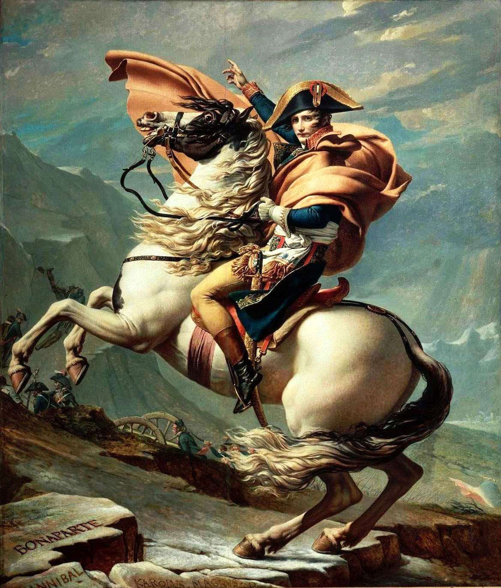

Интерактивная
МЕТАФОРА
ДЕТСТВА
Комната, которая когда-то казалась целой вселенной, стала тесной. В Gomzik Game 2 вы впервые выходите за порог — в лабиринт коридоров, бытовых запретов, детских страхов и порталов собственного сознания.

«Ваши главные враги — не монстры из фэнтези, а Мама и скрип половицы за закрытой дверью».
Философия наивного абсурда
“ Мир Gomzik Game 2 живёт по законам детской логики: тени на стене могут оказаться друзьями, обычный ужин — самым страшным испытанием дня, а монитор на столе — единственным окном в свободу. — Из концепт-документа игры
Вы играете за Гомзика — маленькое, уязвимое существо в белой футболке, запертое внутри сюрреалистичной архитектуры собственной квартиры и воображения. Здесь нет мечей, брони и магии: только смекалка, умение прятаться и тихий шаг.
Во второй части привычная оранжевая комната перестаёт быть пределом. За её единственной коричневой дверью открываются коридоры, кухни, прыжки над пропастью из шипов и абсурдные испытания. Игра говорит о взрослении одновременно смешно, странно и пронзительно честно.
Четыре архетипа мира

Оранжевая комната
Точка отсчёта. Две горизонтальные линии на тёплой стене, коричневый пол, дверь слева и компьютерный стол справа. Пока дверь закрыта — вы в безопасности. Но стоит прислушаться, и тишина начинает звенеть.

Компьютер и Gomzik Player
Системный блок с двумя красными диодами и экран, открывающий собственную ОС. Внутри — минималистичный аудиоплеер на кремовом фоне с рукописным логотипом и саундтреком от которого невозможно оторваться.

Небо, шипы и ключи
Когда быт превращается в платформер: парящие острова с травой, бесконечный ряд серых шипов внизу, жёлтый ключ на узком уступе и счётчик 2/3 в углу экрана. Цель одна — «Найди монитор!».

Мир глазами ребёнка
Странные взрослые, загадочные соседи и Мама как абсолютный закон пространства. Чтобы выжить, нужно читать ритм шагов, прятаться и превращать детский рисунок в тактическую карту.
Интерактивный GOMZIK PLAYER
Найди монитор!
Браузерная мини-версия уровня из Gomzik Game 2: соберите все 3 ключа, перепрыгивайте шипы и доберитесь до монитора.
Кадры из реальности и снов


Люди за дверью

Создатель
Главный Разработчик
Отвечает за код, сюрреалистичный дизайн уровней, визуальный язык и игровую логику мира Гомзика.
Профиль Steam ↗
Администратор
Комьюнити Менеджер
Поддерживает связь с игроками, ведёт Telegram-канал и координирует сообщество вокруг игры.
Профиль Steam ↗